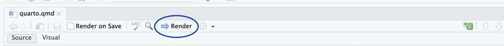
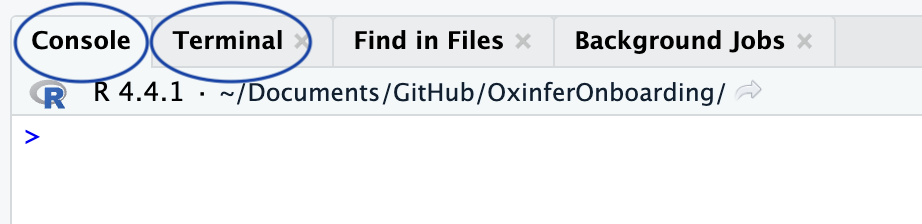
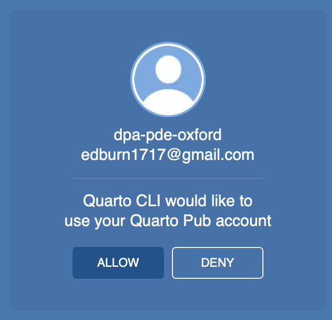

Quarto
Deploy quarto documents
If you want to learn more about how to publish using Quarto, the official documentation covering all deployment options can be found here.
In this guide, we’ll walk through the three main methods we use to deploy Quarto documents:
- Deploy using Quarto Pub
- Deploy using GitHub Actions with GitHub Pages
Getting Started
Let’s begin by creating a simple project and an initial test.qmd document:
---
title: "test"
editor: visual
format: html
---
## Subtitle 1
This is an example documentTo render the document, you can either click the Render button:

Or use the terminal:
quarto render— for static renderingquarto preview— for live-preview in a web browser
🧮 Console
Purpose: Runs R code interactively.
What it does:
- Executes R commands.
- Shows outputs, errors, warnings, and messages from R.
- Where your R scripts run by default.
💻 Terminal
Purpose: Provides access to the system shell (e.g., Bash, Zsh, or Command Prompt).
What it does:
- Run system-level commands (
ls,git,python,quarto, etc.). - Interact with Git, Quarto CLI, Python environments, makefiles, etc.
- You can run R scripts using
Rscript, but it’s not interactive like the Console.
- Run system-level commands (

quarto render and quarto preview
🛠 quarto render
Purpose: Renders one or more
.qmdfiles into the output format(s) (HTML, PDF, Word, etc.).Use case: When you want to build your final output files — for example, to publish or share.
Behavior:
- Runs the
.qmddocument(s). - Produces output files (like
.html,.pdf,.docx, etc.) in the output directory. - Does not start a web server or open a browser window.
- Runs the
👀 quarto preview
Purpose: Renders and serves the document (or website/book) in a local web browser, with live-reloading.
Use case: When you are developing a document, website, or book and want to see changes live.
Behavior:
- Renders the file(s) like
renderdoes. - Starts a local web server (usually at
http://localhost:port). - Watches files for changes and automatically re-renders and reloads the browser when you save.
- Renders the file(s) like
Summary
| Command | Renders output? | Starts server? | Live reload? | Ideal for |
|---|---|---|---|---|
quarto render |
✅ | ❌ | ❌ | Final builds, scripts |
quarto preview |
✅ | ✅ | ✅ | Development, writing |
Deploying with Quarto Pub
To deploy your document with Quarto Pub:
- Create a Quarto Pub account: Sign up here.
💡 For team projects, use the group account. Credentials can be found here.
- Run the following in the terminal:
quarto publish quarto-pub- Authorize your account:
A browser window will open — sign in and click Allow:

- Choose a name for your site (e.g.,
test).
Your document will be rendered and published to https://username.quarto.pub/sitename/ (e.g., https://dpa-dpe-oxford.quarto.pub/test/)
🎉 Congratulations! You’ve published your first Quarto document! 🍾
✅ Good for quick sharing ❌ Not ideal for collaborative or large-scale projects — use GitHub Pages instead.
Deploying with GitHub Pages and GitHub Actions
This method is ideal for collaborative and long-term projects.
Step 1: Set Up a GitHub Repository
- Push your project to GitHub.
- Make the repository public (unless you are paying for private runners).
Step 2: Enable GitHub Pages
You can do this via:
Option A: R Console
usethis::use_github_pages()Option B: GitHub UI
- Create the
gh-pagesbranch. - Go to Settings → Pages.
- Under “Deploy from a branch”, select
gh-pages.
Step 3: Add a GitHub Actions Workflow
Create a file at .github/workflows/publish.yml with:
on:
workflow_dispatch:
push:
branches: main
pull_request:
branches: main
name: Quarto Publish
jobs:
build-deploy:
runs-on: ubuntu-latest
steps:
- name: Check out repository
uses: actions/checkout@v2
- name: Set up Quarto
uses: quarto-dev/quarto-actions/setup@v2
- name: Render quarto website
run: quarto render
- name: Publish
if: github.event_name != 'pull_request'
uses: quarto-dev/quarto-actions/publish@v2
with:
target: gh-pages
render: false
publish_dir: ./_site
env:
GITHUB_TOKEN: ${{ secrets.GITHUB_TOKEN }}Step 4: Including R Code
If your Quarto documents include R code:
- Create a lock file with:
renv::init()- Update your GitHub Action to install R and dependencies:
- name: Install R
uses: r-lib/actions/setup-r@v2
- name: Install R libraries with renv
uses: r-lib/actions/setup-renv@v2Your complete publish.yml should now look like:
on:
workflow_dispatch:
push:
branches: main
pull_request:
branches: main
name: Quarto Publish
jobs:
build-deploy:
runs-on: ubuntu-latest
steps:
- name: Check out repository
uses: actions/checkout@v2
- name: Set up Quarto
uses: quarto-dev/quarto-actions/setup@v2
- name: Install R
uses: r-lib/actions/setup-r@v2
- name: Install R libraries in renv
uses: r-lib/actions/setup-renv@v2
- name: Render quarto website
run: quarto render
- name: Publish
if: github.event_name != 'pull_request'
uses: quarto-dev/quarto-actions/publish@v2
with:
target: gh-pages
render: false
publish_dir: ./_site
env:
GITHUB_TOKEN: ${{ secrets.GITHUB_TOKEN }}Pros and Cons
| Method | Pros | Cons |
|---|---|---|
| GitHub Pages | ✅ Fully automated with GitHub Actions ✅ Great for collaborative projects |
❌ Source code (and potentially data) must be public |
| Quarto Pub | ✅ Simple, fast for one-off projects ✅ No need to push source data |
❌ Manual rendering each time ❌ Not ideal for teamwork |
Note we have covered a thiny part of the deployment options, you can read more about how to publish quartos here.
In fact, you can publish in github pages from the terminal or publish to quarto pub using github actions. So there are way more possibilities that we have shown in this tutorial.
Quarto websites
In this tutorial we have only worked with a simple .qmd document but using exactly the same deployment procedure we can create a website (set of html). To do so you need to create the _quarto.yml to give an structure to your set of .qmd files. You can read how to create and customise your _quarto.yml file here.